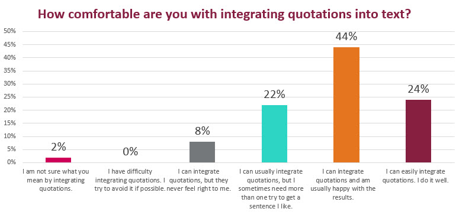

As you collaborate on your Recommendation Report, you’ll add quotations from your research to support your position. You never just drop in a quotation however. You should always integrate your quotations by introducing them and then explaining their significance after you’ve shared them.
Because integrating quotations is critical to strong writing, I asked you to tell me how comfortable you are with the process. Your response is summarized in the bar graph below:

How comfortable are you with integrating quotations into the text in your documents.
Results:
Try these resources for ways to add quotations from your research to the documents you write: